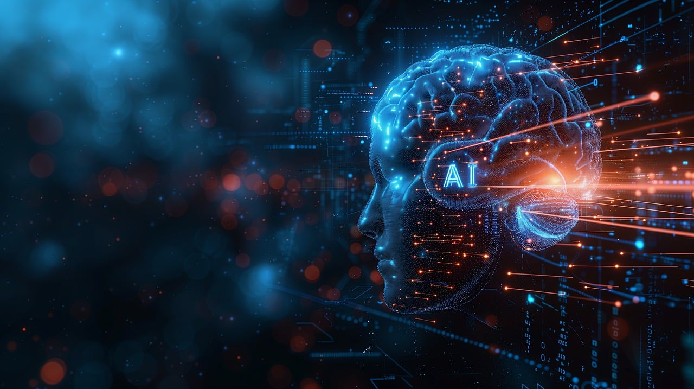
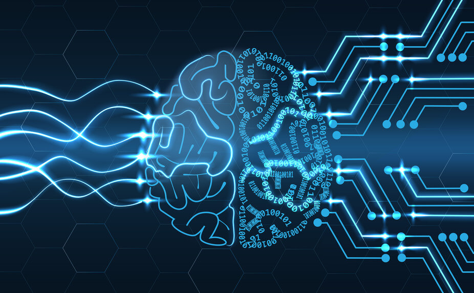

Che cos'è l'intelligenza artificiale?
L'Intelligenza Artificiale, è il ramo dell'informatica che si occupa, attraverso dei sistemi Hardware e Software, di riprodurre una prestazione caratteristica dell’intelletto umano, come il ragionamento, l’apprendimento e la creatività.
Ad oggi non esiste però, un sistema di intelligenza artificiale che sia effettivamente in grado di raggiungere il livello dell'intelletto umano, o di agire in maniera autonoma e sostituirlo.

Intelligenza artificiale forte e debole
Nel corso del suo sviluppo, l'IA è stata suddivisa in due categorie principali: IA forte e IA debole, distinte per la loro complessità, capacità e obiettivi:
Il test di Turing
Il computer si trova alla base dell’intelligenza artificiale. Questo potente strumento è dovuto alla base dell’invenzione del genio matematico Alan Turing, con il concetto della Macchina universale di Turing. In oltre Turing fornì una soluzione al problema dell’espressione dell’intelligenza in una macchina: il Test di turing.
Questo test è un metodo di verifica dell’intelligenza artificiale che consiste nel chiedere una serie di domande a cui una persona e un’IA dovranno rispondere.
Un esaminatore dovrà quindi scoprire quale delle due risposte è fornita dall’IA.
La macchina viene poi sostituita da una persona con il compito di mentire, e l’esaminatore dovrà quindi capire quale dei due sta mentendo e chi risponde sinceramente.
Se il numero di volte in cui la macchina viene individuata, sarà pari al numero di volte in cui la persona che mente viene scoperta, il test sarà considerato superato, ma fino ad oggi nessuna IA è riuscita a superare questo test
Le reti neurali
Per cercare di riprodurre le attività del cervello umano, sono nate le reti neurali artificiali, uno strumento che imita il cervello nel memorizzare e utilizzare le informazioni ricevute.

Esse sono formate da una rete di nodi collegati. Ogni nodo ha un collegamento in input, e un collegamento in output. Una volta fornita in input una configurazione di segnali-stimolo, viene rilasciata in uscita un’altra configurazione di segnali.
L'intelligenza artificiale generativa e gli strumenti AI
L'intelligenza artificiale generativa è un tipo di Intelligenza Artificiale in grado di generare testo, immagini, video, musica o altri media in risposta a delle richieste, dette "Prompt", utilizzando algoritmi di Machine Learning.
- Chatbot o Generatori di testo: Sono capaci di elaborare il linguaggio naturale, tradurre automaticamente e di generare linguaggio naturale. Alcuni modelli sono in oltre in grado di generare codice sorgente per nuovi programmi, se addestrati adeguatamente.
- Generatori di Immagini: Sono addestrati su set di immagini e sono in grado di rielaborare e generare nuove immagini.
- Generatori di Video: Sono addestrate su video e sono in grado di generare nuove clip video.